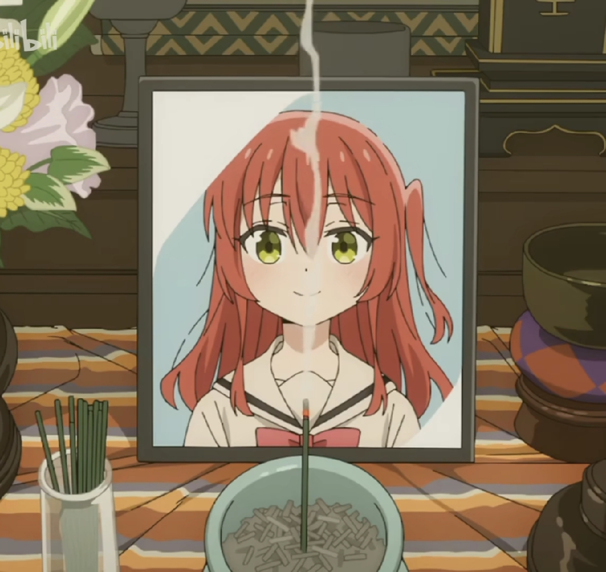

Climbs 1-2 times/week (weekends) | Suzhou indoor bouldering gyms | Rents equipment
Personality: Introverted, socially anxious
Our Team
4 passionate creators behind Climblink

Xiangyu Zheng
ID: 2360671
Founder & CEO
Minghao Shen
ID: 2360645
Product Designer
Yifei Li
ID: 2361095
Frontend Lead
Junjie Zhu
ID: 2359942
Community Manager